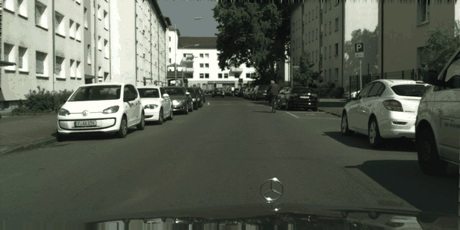

PixCon: Clean-Positive Contrastive Learning for Foundation-Model Semi-Supervised Segmentation
A clean-positive pixel memory bank that admits only labeled pixels, keeping contrastive positives free of pseudo-label noise on DINOv2-scale features. Takes the #1 spot in semi-supervised segmentation alongside UniMatch V2.